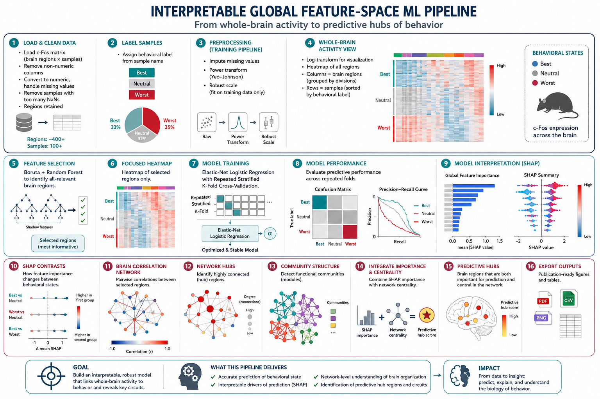
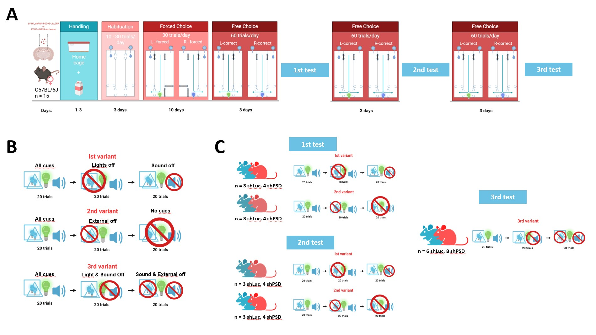
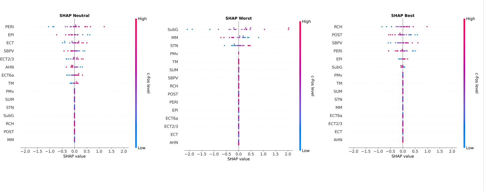
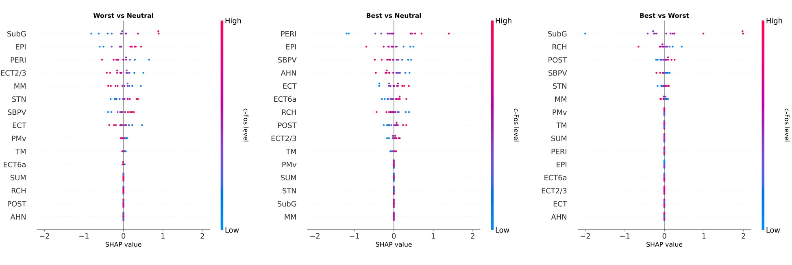

Cfos analsysis scripts


Supplementary material accompanying the conference poster.
Download PosterRepresentative behavior in the automated E-maze.

Cue Usage tests
A. Cue usage test experimental timeline.
B. Schematics of each variant of Cue usage test. All test started with all cues available.
C. Test variants explained.


SHAP contrasts indicating which activity of which brain region is characteristic for Best, Neutral or Worst animals

SHAP contrasts predicting how brain region activity changes between behavioral states